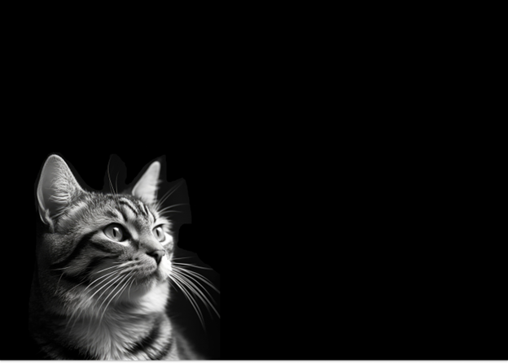

Let's Understand Cats
Your go-to guide for cat behavior & sound.
Behavior Understanding
Cat Tail Language
A cat’s tail is one of the first places to look for signs of their mood:
- High, vertical tail: Confident, comfortable, happy, and friendly.
- Low tail: Fearful or anxious.
- Tucked tail: A fearful cat making itself appear smaller to avoid confrontation.
- High, puffed-out tail: A cat trying to look larger to intimidate potential threats.
It's important to observe how the shape of the cat's tail relates to its overall posture and the surrounding situation.
Cat Ear Language

A cat’s ears are another significant indicator of its mood:
- Forward-facing ears: The cat is attentive, curious, or playful.
- Flattened ears: The cat is frightened, defensive, or aggressive.
- Swiveling ears: The cat is uncertain or hearing something unfamiliar.
Just like the tail, the ears' position offers insight into how a cat is reacting to its environment.
Cat Eye Language
A cat’s posture, tail, and ears will give a lot of clues, but the eyes can also reveal much:
- Slow blinking: A sign of trust and comfort. If your cat is blinking slowly at you, it's a good indication that it feels safe.
- Dilated pupils: A sign of stimulation, which can mean excitement, fear, or playfulness. Context is key in determining which emotion the cat is experiencing.
- Narrowed pupils: Often indicates focus, relaxation, or readiness to engage in hunting behavior.
The eyes add more context to the cat’s emotional state when combined with other body language signs.
Sound Understanding
While not technically "body language," a cat’s vocalizations are a crucial part of understanding their emotions.
Why do cats purr?
Most people understand that purring is a good sign, but, in fact, like most other indicators, it’s not guaranteed. Purring is a sign of pleasure – it’s the most obvious way to tell when a cat is happy. However, cats may also purr when they’re in pain! Many veterinarians report that cats purr when they’re injured or feeling sick.
Why is my cat constantly meowing?
Meowing can be tricky to interpret because it serves many purposes:
- Hunger: Your cat could be signaling it wants food.
- Chatty nature: Some cats, especially certain breeds, are more vocal than others.
- Discomfort: If meowing is persistent and your cat seems unwell, it’s time to visit the vet.
- Constant meowing, in context with other behaviors, is essential to fully understanding what your cat is trying to communicate.
Cat Fear/Aggresion Sounds
When a cat wants you to understand that they’re feeling threatened, they may go through a series of vocalizations, increasing in intensity as their discomfort increases.
- the growl: A growling cat is warning you to back off.
- the hiss: Hissing indicates that a cat is feeling threatened and may be getting ready to fight or flee; hissing is also a very effective way of showing a potential aggressor that the cat is armed with sharp fangs.
- the yowl: usually comes after the hiss and is a loud rising vocalization. Cats also make this sound when they're in heat.
- the shriek: Finally, a cat that’s shrieking feels that they’re out of options and is about to make their stand or retreat.